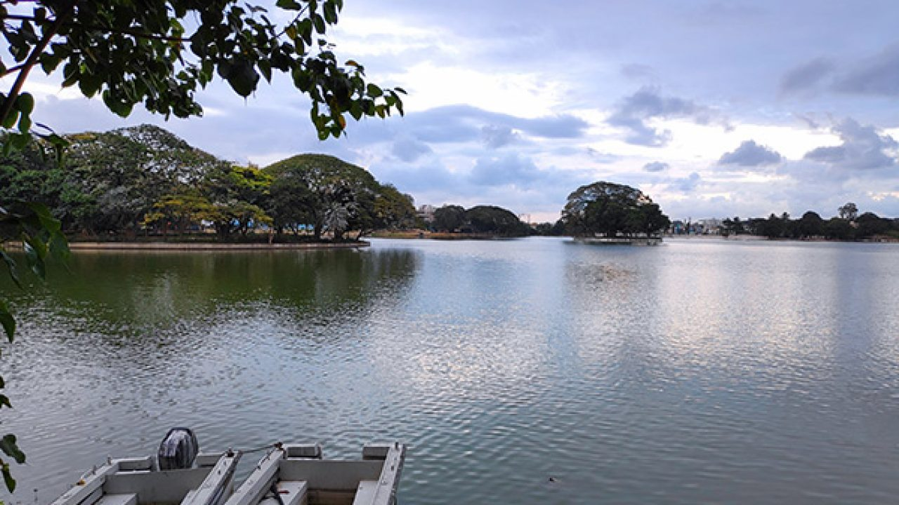

Ulsoor Lake
Bodies of water
Ulsoor Lake' or Halasuru Lake, one of the biggest lakes in Bangalore, is located on the eastern side of the city. It derives its name from the name of the locality it is situated, namely, Halasuru, close to M G Road. It is spread over 50 ha and has several islands.
Timings: 6:00 am to 8:00 pm; closed on Wednesdays